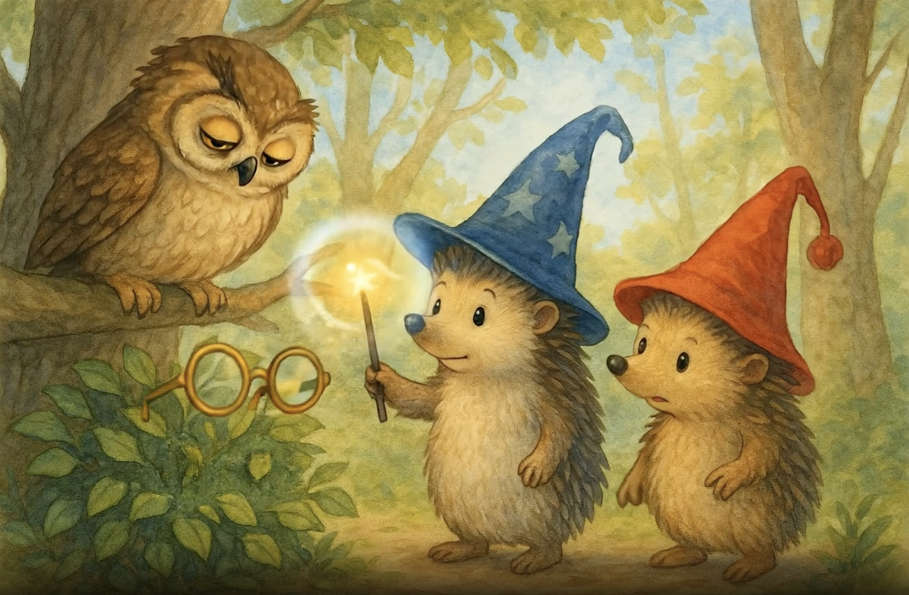

Приключения Мистера Пинпина и Мистера ПомПома - Поиски Очков Совы - Страница 1

Было прекрасное утро в Зачарованном Лесу, когда братья-ежи, Мистер Пинпин в своей синей шляпе со звёздами и волшебной палочкой, и Мистер ПомПом в весёлой красной шапке, прогуливались среди золотых деревьев. Вдруг они услышали грустный вздох. "Кто там?" - спросил Мистер ПомПом. Со своей ветки Мудрая Сова смотрела на них прищуренными глазами. "О, маленькие друзья," - сказала сова, "я потеряла свои очки, и без них не могу читать свои книги заклинаний."

"Не волнуйтесь, Господин Сова! Мы вам поможем!" - воскликнул Мистер Пинпин с решимостью, поднимая свою волшебную палочку, которая мягко светилась в утреннем свете. Мистер ПомПом с энтузиазмом кивнул. "Да, мы очень хорошо находим потерянные вещи. Однажды я нашёл любимый жёлудь моей кузины во всём лесу." Сова с надеждой моргнула, пока два брата начали искать среди золотых листьев, покрывающих лесную землю.

"Я помню, что читал прямо здесь, когда почувствовал, как они соскользнули," - сказала Мудрая Сова, указывая крылом на кучу листьев возле корней большого дуба. "Но мои глаза уже не те без очков." Мистер Пинпин подошёл к указанному месту с волшебной палочкой в руке. "Хм, дай подумать... Какое заклинание подойдёт для поиска потерянных вещей?" - бормотал он, пока Мистер ПомПом уже копался в листьях своими маленькими лапками.

"Я знаю! Я использую заклинание 'Раскрытие Скрытого'!" - уверенно объявил Мистер Пинпин. Он взмахнул палочкой в воздухе, рисуя яркую звезду, и произнёс: "Пердидус Энконтрадус Воларус!" Внезапно золотая вспышка осветила лесную поляну, и к всеобщему изумлению, очки совы появились, волшебно паря в воздухе, светясь мягким, тёплым светом. "Получилось!" - закричал Мистер ПомПом, подпрыгивая от радости.

Мудрая Сова широко раскрыла глаза, любуясь видом своих любимых очков, парящих в воздухе, как маленькая золотая звезда. "О, мои драгоценные очки! Я так скучал по ним!" - воскликнула она с волнением. "Без них я не могла читать свои книги зелий и карты звёздного неба." Мистер Пинпин держал палочку поднятой, сосредоточенно поддерживая заклинание. "Не волнуйтесь, Господин Сова, мы направим их к вам," - сказал он с доброй улыбкой.

"Давайте, очки, идите к своему хозяину," - прошептал Мистер Пинпин, двигая палочкой мягкими кругами. Очки начали медленно плыть к сове, танцуя в утреннем воздухе, как золотая бабочка. Мистер ПомПом, не желая оставаться в стороне, встал на цыпочки и нежно подул на очки. "Я тоже помогаю!" - гордо сказал он. "Моё волшебное дыхание ёжика толкает их в правильном направлении." Сова с тревогой и благодарностью наблюдала, как её драгоценные очки приближались всё ближе и ближе.

Золотые очки изящно приближались к сове, которая смотрела на них, не моргая, словно боясь, что они исчезнут, если она отведёт взгляд. "Они почти здесь," - тихо сказала она, с сердцем, полным надежды. Мистер Пинпин сохранял концентрацию, на его лбу выступили маленькие капельки пота от магического усилия. "Ещё чуть-чуть," - пробормотал он. Мистер ПомПом тихо хлопал в ладоши, подбадривая брата. "Ты сможешь, Пинпин. Ты лучший волшебник-ёжик в лесу."

Элегантным движением Мудрая Сова расправила свои широкие коричневые крылья, создавая лёгкий ветерок, который заставил листья танцевать вокруг. "Я почти достал их!" - взволнованно воскликнула она, вытягивая правое крыло к светящимся очкам. Утренний солнечный свет просачивался сквозь ветви, создавая волшебный момент, когда очки медленно приближались к своему месту назначения. Мистер Пинпин и Мистер ПомПом затаили дыхание, с нетерпением наблюдая решающий момент воссоединения.

И это случилось! С нежностью падающего пёрышка золотые очки идеально опустились на клюв Мудрой Совы. "Мы сделали это!" - закричали Мистер Пинпин и Мистер ПомПом в унисон, прыгая от радости. Сова оставалась очень неподвижной на мгновение, словно не могла поверить, что её любимые очки вернулись. Слеза счастья блеснула в её правом глазу. "О, мои дорогие друзья," - взволнованно прошептала она, "я не знаю, как вас благодарить."